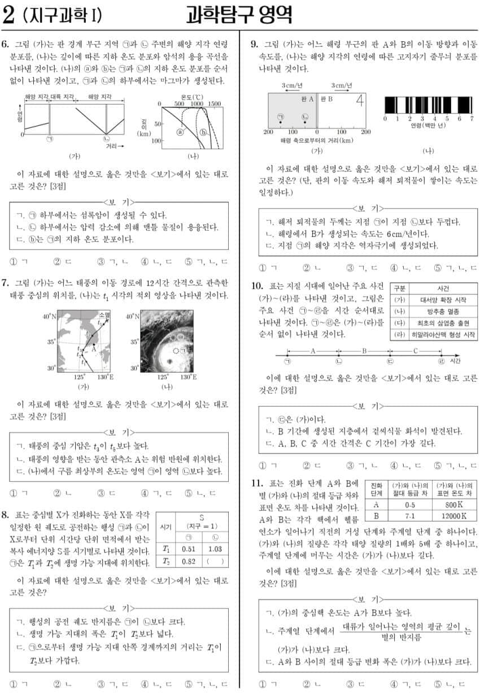
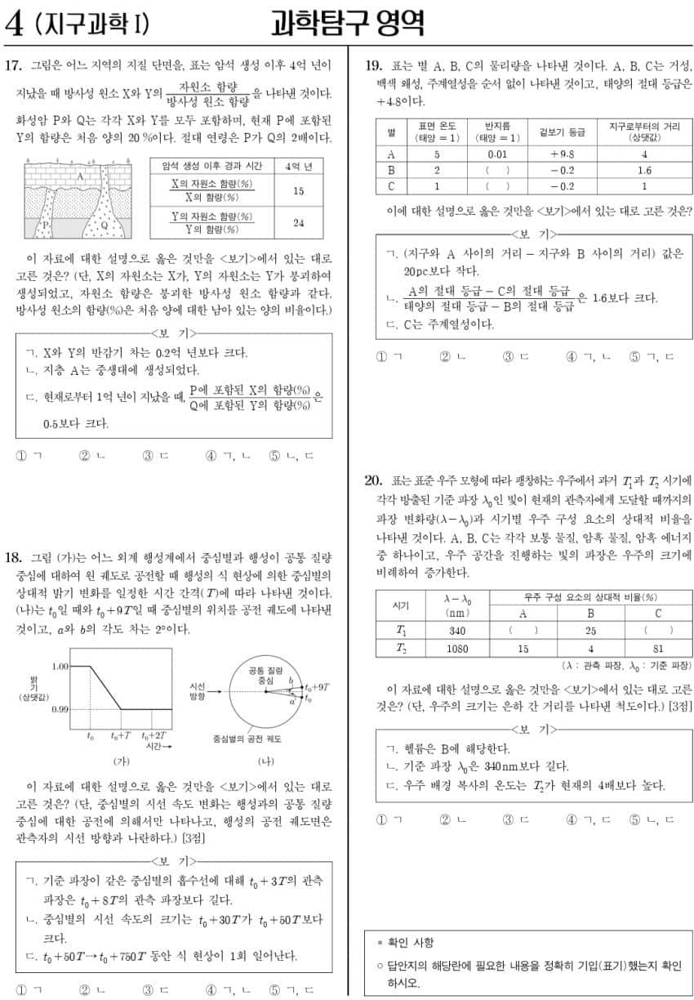

지1이 그옛날에 점수자판기가 아님


지1이 그옛날에 점수자판기가 아님
???뭐야 지2아냐?
단적으로 영어시험의 경우, 아무리 내 지금 영어능력이 외국인과 소통하면서 영어로 일을 하고 영어로 타인을 가르칠 만큼
고딩때와 비교조차 안될 만큼 뛰어나지만 그 때의 나와 지금의 내가 바로 수능 영어 시험을 친다면
그 때의 나를 이길 수 있다고 자신 못함. 토익도 마찬가지임.
따로 시험을 위한 트레이닝을 거쳐야지 아마도 더 나은 성적을 받을 수 있을꺼야
진짜 공부 따로 있고 점수 잘 따기 위한 공부가 따로 있다.
09수능 쳤는데 그당시 지1도 자판기였지만 지2가 진짜 개꿀통이였음. 그때 지2 만점 받았는데 지1 3등급 받고 나락감ㅠㅠ
대가리 조금만 굴려서 써먹으면 풀수 있는것들이네.
미국 살고 영어로 일 하지만 지금 수능 영어 셤 치라고 하면 존나 무서움
코런갑다 함